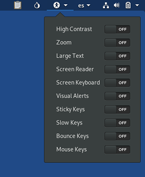

Tails and the GNOME desktop include assistive technologies to support users with various impairments and special needs, and to interact with common assistive devices.
Universal access menu
You can activate most of these technologies from the universal access menu (the
 icon which looks like a person) in the top bar:
icon which looks like a person) in the top bar:

These technologies are documented in more details in the GNOME universal access documentation.
Keyboard shortcuts
| Turn screen reader on or off | Alt+Super+S |
| Turn zoom on or off | Alt+Super+8 |
To access the universal access menu using the keyboard:
Press Ctrl+Alt+Tab to move the keyboard focus to the top bar.
Use the arrow keys on the keyboard to select the universal access menu.
Press Enter to open the menu.
Use the up and down arrow keys to select items in the menu.
Press Space to toggle the selected item.
Press Esc to close the menu.
Screen reader
To hear screen elements spoken to you, you can activate the Screen Reader accessibility feature.
For more detailed documentation refer to the official Orca Screen Reader documentation.
The screen reader takes around 10 seconds to start.
The screen reader does not work with the Unsafe Browser.
Screen keyboard
If you prefer a pointing device over the keyboard, you can activate the Screen Keyboard accessibility feature.
For more detailed documentation refer to the official GNOME Screen Keyboard documentation.
Dasher graphical text entry application
If you are operating a computer one-handed (by joystick, touchscreen, or mouse) or zero-handed (by head-mouse or eyetracker), you can use the Dasher graphical predictive text entry application.
Dasher is available from .